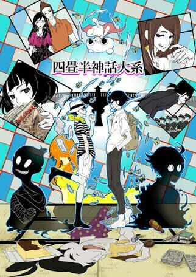

FLCL
Ficha y sinopsis
Título: FLCL
Género: Comedia, Juvenil, Escolar
Demografía: Shonen
Capítulos: 13
Estydio Madhause
Año de emisión: 2013
Naota que es un estudiante normal (excepto por ser un poco cinico)un dia cuando esta con mamimi una mujer con una vespa amarilla lo atropella y luego le golpea con un bajo.
La chica que atropella a Naota se llama Haruko Haruhara aunque su nombre real es Raharu Haruha, va a todas partes con una vespa amarilla dice tener 19 años ,tiene el pelo colo rosa y empuña un bajo electrico para zurdos y entra a trabajar como ama de llaves en la casa de Naota tras atropellar a su padre, es la persona que cambia la vida de Naota,ella es un extraterrestre que anda buscando a Atomsk que es un robot poderoso que lo llaman el rey de los piratas(one piece? donde!)asi que ella abre un agujero negro/portal en la cabeza de Naota de un golpe con su bajo, el resultado es que de la cabeza de Naota salen robots.mamimi es la ex-novia de su hermano que viaja a america para dedicarse al beisball llama a Naota Takkun al igual que a las mascotas que encuentra como recuerdode su amor por Tasuku el hermano de Naota,tiene tendencias piromanas que emergen cuando un lugar le trae malos recuerdos ,es una chica con problemas ,no va a clases,fuma y pasa la mayoria del tiempo bajo un puente, habla de si misma en tercera persona y en sus cigarrillo siempre escribe Never Knows Best (nunca conoces lo mejor).
Ver Parasyte
Ver Portada
Kuzu no Honkai
Ficha y sinopsis
Título: Kuzu no Honkai
Género: Romance, Escolar, historias de la vida
Demografia: Seinen, Shonnen
Capítulos: 11
Autor: Tomihiko Morimi
Año de emisión: 2004
The Tatami Galaxy recibió el gran premio en la categoría de animación en el Japan Media Arts Fectival 2010, siendo la primera serie animada en televisión en conseguir tal logro gracias a las valoraciones del jurado que calificaron esta obra como "un trabajo de gran expresividad y personalidad que da un giro de tuerca a las limitaciones de la televisión" a la par que alabaron la complejidad de sus personajes, el diseño general o el esquema de colores que sigue la serie.La historia de The Tatami Galaxy cuenta las aventuras y las aún más numerosas desventuras de un estudiante de tercer año de universidad durante los dos primeros años de la carrera, los cuales han estado llenos de infortunios y malos recuerdos y no de lo que él esperaba: Una vida color de rosa donde, tras unirse a uno de los numerosísimos clubs que se presentaban ante sus ojos, lograría conocer a una hermosa doncella de larga melena azabache con la que viviría una apasionada historia de amor. ¿Qué pasaría si hubiera escogido otro club el día del inicio de la universidad? ¿Habría cambiado algo? ¿Sería capaz de vivir el sueño de la vida universitaria?
Ver Kuzu no Honkai
Ver Portada

The Tatami Galaxy
Ficha y sinopsis
Título: The Tatami Galaxy
Género: Drama, Romance, Escolar
Demografia: Seinen
Capítulos: 12
Estudio: Lerche
Año de emisión: 2017
Frente al resto del mundo, Hanabi Yasuraoka y Mugi Awaya son la pareja perfecta pero en realidad ellos esconden el mismo secreto: están enamorados de dos personas con las que no pueden estar, sus profesores. Kuzu no Honkai habla sobre el amor y las relaciones que surgen al encontrarse frente a un amor correspondido, además del dolor que algunas personas pueden causar al tomar decisiones.
Hanabi Yasuraoka es una estudiante de secundaria que ha estado enamorada por mucho tiempo de su amigo de la infancia, Narumi Kanai, quien ahora resulta ser su profesor de instituto. Sin embargo, al ver la mirada en los ojos de Narumi cuando este ve a la nueva profesora de música, Akane Minagawa, Hanabi se da cuenta de que esta enamorado de Akane y no de ella. Hanabi posteriormente conoce a Mugi Awaya, otro estudiante también enamorado de Akane, quien solía ser su tutora cuando asistía a la preparatoria. Hanabi y Mugi hacen un pacto y comienzan una relación falsa para satisfacer la soledad provocada por sus respectivos amores no correspondidos, tanto sexual como emocionalmente. Ambos acuerdan no enamorarse el uno del otro y poner fin a la relación si su amor es devuelto por la gente de la que están enamorados.
Ver Kuzu no Honkai
Ver Portada